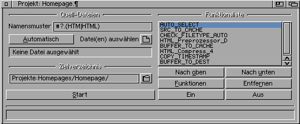

Bedienung
| Oberfläche, Menü, ToolTypes, Sonstiges |

| Oberfläche | |
|---|---|
| Quell-Dateien: | Hier können die zu bearbeitende(n) Datei(en) ausgwählt werden. Gleichzeitig wird die Anzahl der ausgwählten Dateien angezeigt. Der Button Automatisch nutzt nicht gesetzte Archiv-Bits um die Dateien auszuwählen. Diese werden dann nach der Auswahl gesetzt! D.h. sobald man mit einem Editor eine Datei ändert, wird beim Speichern das Archiv-Bit zurückgesetzt und CompressHTML erkennt daran eine Änderung. Dies ist nur freigegeben wenn das TOOLTYPE SETARCHIV auf ON ist! |
| Zielverzeichnis: | Hier kann das Zielverzeichnis eingegeben oder ausgewählt werden. Alle dort schon vorhandenen Dateien werden überschrieben! Das Zielverzeichnis darf nicht indentisch mit dem der Quell-Dateien sein. Ist dies trotzdem der Fall, wird die Eingabe ignoriert. |
| Bearbeitung: | Über diese zwei Buttons wird die Bearbeitung gestartet bzw. abgebrochen |
| Bearbeitungsmethode: | Über das Cycle-Gadget kann eine Bearbeitungsmethode ausgewählt werden. |
| Einstellungen: | Ist zu einem Plugin (momentan zu keinem), ein Voreinsteller vorhanden, wird dieser Button freigegeben. |
| Information: | Zeigt ein Informationsfenster zur aktuellen Bearbeitungsmethode an. |
| Statuszeile: | Im ersten Feld wird angezeigt, was das Programm im Augenblick macht, im zweiten Feld, wieviele von den ausgwählten Quell-Dateien bearbeitet worden sind. |
| Menü: | |
|---|---|
| Projekt: | Laden: Lädt ein ein vorher gespeichertes Projekt. Speichern: Speichert das aktuelle Projekt mit folgenden Programmeinstellungen:
Speichern als: Speichert diese Einstellungen unter einem anderen Namen. Beenden: Beendet das Programm. |
| Optionen: | Prüfe Dateityp: Prüft die Quelldatei auf die Fähigkeiten des Moduls. Das Programm prüft dann die ob z.B. eine HTML Datei, auch mit HTML-Plugin bearbeitet wird. Benutze Cache: Schaltet den Dateien-Cache ein oder aus (wird bei Preprozessoren immer benutzt!). Benutze Preprozessor: Damit werden vor dem Komprimieren, die Dateien mit dem Preprozessor ¹) bearbeitet (wird deaktiviert, wenn als Bearbeitungmethode ein Dekompressor oder Preprozessor gewählt wurde). |
| Hilfe: | Aktuelles Plugin: Zeigt das gleiche an, wie beim Button Information über CompressHTML: Zeigt Informationen über das Programm und die verwendeten Bibliotheken an. Installierte Plugins: Gibt Informationen über die installierten Bearbeitungsmethoden aus. Beenden: Beendet das Programm |
| ¹) Als Preprozessor wird der verwendet, der im Cycle-Gadget als erster angezeigt wird und der zum Dateityp paßt. | |
| ToolTypes: | |
|---|---|
| CACHEDIR | Legt das Cache-Verzeichnis fest (Standard: T:), sollte immer im RAM liegen, sonst bringts nichts! |
| CACHEFILES | Legt die minimale Anzahl der zu cachenden Dateien fest (Standard: Minimum 2, ist bei Preprozessoren immer an) |
| DEFPROJECT | Legt das Standard-Projekt fest. Wird beim Programmstart geladen. |
| SETARCHIV | Gibt die automatische Dateiauswahl frei.. |
| HTMLSCAN | Legt fest wieviel Zeilen der Quelldatei nach <HTML> untersucht werden sollen (Standard: Minimum 2) |
| QUITVERIFY | ON = Rückfrage bei Beenden des Programms. OFF = keine Rückfrage |
| TOFRONT | ON = Bringt das Hauptfenster als Fertigmeldung in den Vordergrund. OFF = Fenster bleibt wo es ist. |
| HTML_PATTERN | Das Pattern für HTML-Plugins (Standard: #?.(HTM|HTML)) |
| GUIDE_PATTERN | Das Pattern für AmigaGuide-Plugins (Standard: #?.GUIDE) |
| AREXX_PATTERN | Das Pattern für Arexx-Plugins (Standard: #?.(REXX|RX)) |

| Rückfrage der Dateitypüberprüfung (Menü: Optionen/Prüfe Dateityp) | |
|---|---|
| Überspringen: | Die Quelldatei wird einfach ins Zielverzeichnis kopiert. |
| Ignorieren: | Die Quelldatei wird trotzdem bearbeitet. |
| Bei HTML Dateien werden die ersten Zeilen (siehe ToolTypes) nach <HTML> durchsucht. AmigaGuide wird anhand der Datatypes ermittelt. ARexx nach der Zeichenfolge /* Alle müßen natürlich ASCII sein | |